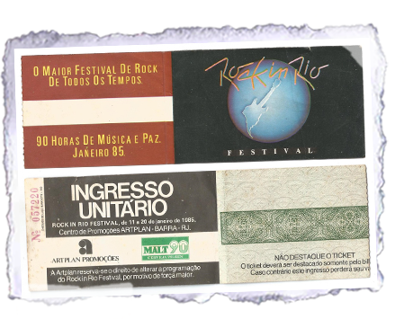
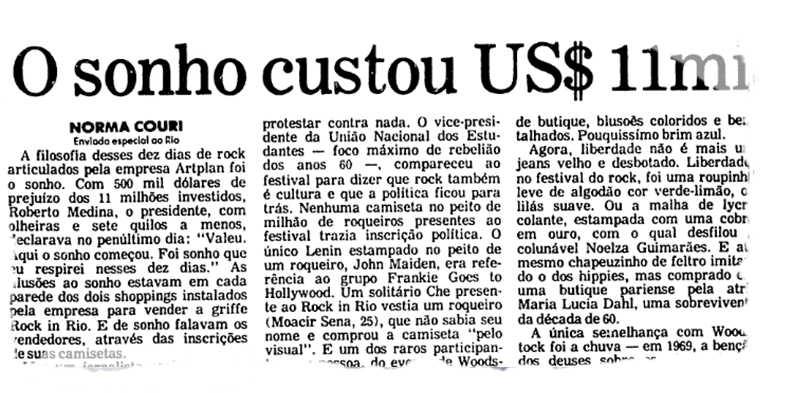
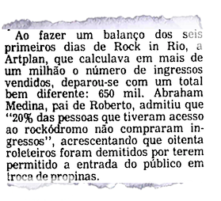

Curiosidades
Aqui você pode conferir algumas das curiosidades que rolou durante Rock in Rio 1985.
- Foram dez dias consecutivos de show e mais de 90 horas de música:
- O festival, um sonho de Roberto Medina, custou 11 milhões de dólares:
- E deu prejuízo de 500 mil dólares;
- Um dos maiores problemas foram os espectadores não pagantes:
- Tancredo Neves assumiu como presidente e as pessoas no festival estavam bem otimistas;
- Alguns artistas brasileiros, como Pepeu Gomes e Baby e o Kid Abelha, foram hostilizados pelos metaleiros;
- Mas os Paralamas do Sucesso foram um dos que saíram do festival com saldo positivo;
- Como não havia cenário para o show dos Paralamas no Rock in Rio de 1985, os integrantes arrastaram algumas palmeiras, samambaias e avencas dos bastidores para compor o palco;
- Na primeira edição do festival, o Mc Donald’s bateu o seu recorde de vendas, que permanece até hoje. Foram 58 mil hambúrgueres em um único dia. O público também consumiu 1,6 milhões de litros de bebidas (em quatro milhões de copos), 900 mil sanduíches, sete toneladas de massa e 500 mil fatias de pizza;
- A palavra “metaleiro” foi inventada durante a primeira edição do Rock in Rio. A Rede Globo, que fazia a cobertura exclusiva do festival, inventou o termo para se referir aos fãs de heavy metal;
- Preocupado em evitar polêmicas, Roberto Medina proibiu em contrato que Ozzy Osbourne devorasse morcegos no palco;
- O sino do AC/DC não pôde ser colocado no palco. Os engenheiros concluíram que a estrutura não suportaria o peso. A saída foi apelar para uma réplica de gesso;
- O dia 11 de janeiro de 1985, que teve Queen, Iron Maiden, Whitesnake, Baby Consuelo e Pepeu Gomes, Erasmo Carlos e Ney Matogrosso, levou nada menos que 300 mil pessoas à Cidade do Rock, número maior que a população atual de Palmas (TO);